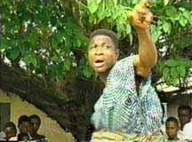
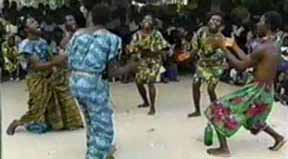
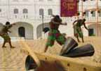
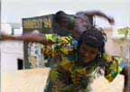

gadzo
Gadzo: from the Eve words ega (iron) and ezo (the fire that burns in you, spiritually). This is a dance performed by young men to heighten their spiritual growth. Though it is considered to be a secular dance, Gadzo is recognized for the spiritual powers it engenders. In Vogan, where Francis Kofi comes from, Gadzo is performed when someone dies an accidental death, or unexpectedly. C.K. Ladzekpo says that the people of Anyako learned it from artists in the town of Kple which lies at the border between Togo and Benin. There, they traditionally perform it with swords. During the time of Ghana's struggle for independence, the British banned performance of Gadzo, for they found the swords and raising of energy to be threatening.
Kale nutsuwo bla agbadza ee,
Eto ka me elo la lee.
Heroes dress with protection,
Crocodile lies in wait.
Soundclip of the Gadzo song "Kale Nutsuwo" (299KB .au format). Mido ame de du megawo gbo.
Ne woadzi he kple tuwo. Ne woada loa na mi yee.
We send a message to the elders:
Find strong powers to put in our hands.
|  | "The Gadzo players are coming.
They are coming with the sounds of chains.
The youth are coming with the sound of chains. They are in chains. They are in chains." |
 |